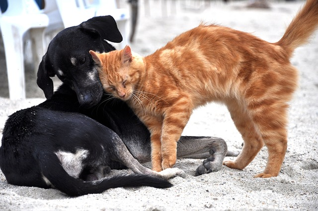
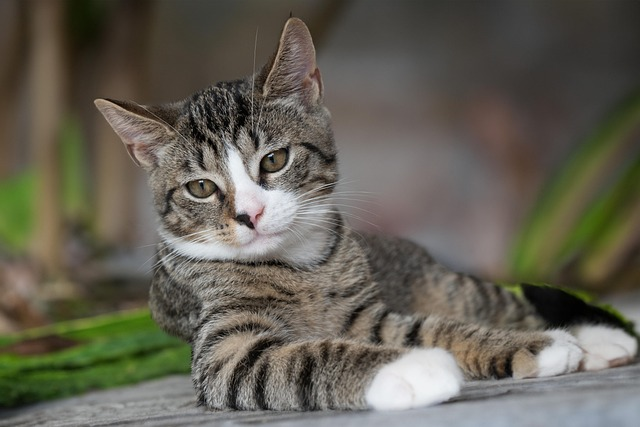
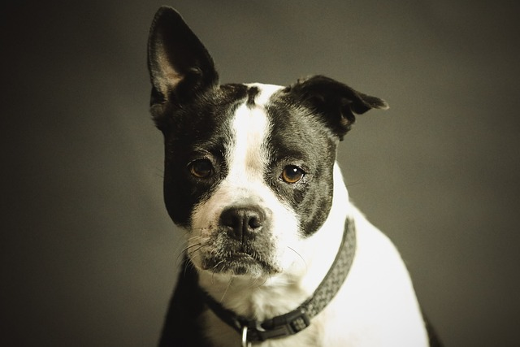

We rescue abandoned pets and find them loving homes.
Images and videos from pixabay.com
Meet our current residents!
Contact us today to schedule an interview and meet our adorable adoption candidates.

Luna (Black dog) and Tang (Orange cat) have been hanging out together, though Tang seems to think of Luna as her personal
bed and tail-toy!. They can be adopted separately or together.

Meet Euro, he is a distinguished genetleman, who prefers to observe disinterestedly at the antics of the kittens. He would be perfect for as an only pet in a household.
Steffy is a pitbull-mix puppy with and she is full of joy and playfulness. She would be ideal for an experienced owner who is willing to invest in her training. She is great with children and cats.

Eeore is an adult boxer-mix who loves to spend his day cuddling on the couch. He would make a great addition to any family that would love to have a bigger dog who is gentle and low-maintainance